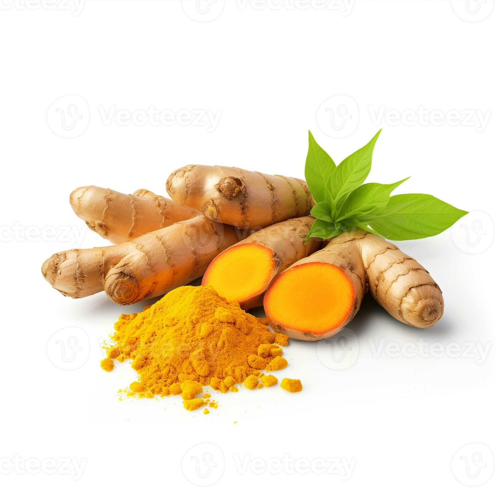
Origin: India
Uses: Curries, milk, skincare
Benefits: Anti-inflammatory, boosts immunity
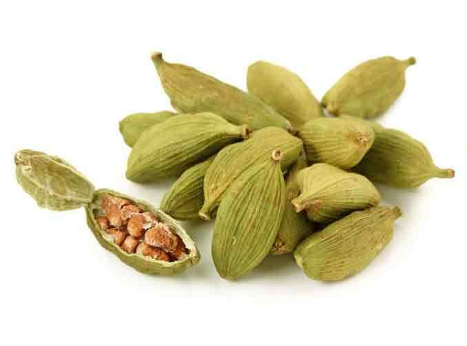
Origin: Kerala, India
Uses: Tea, sweets, desserts
Benefits: Improves digestion, freshens breath
Origin: Sri Lanka, India
Uses: Desserts, beverages
Benefits: Controls blood sugar, antioxidant
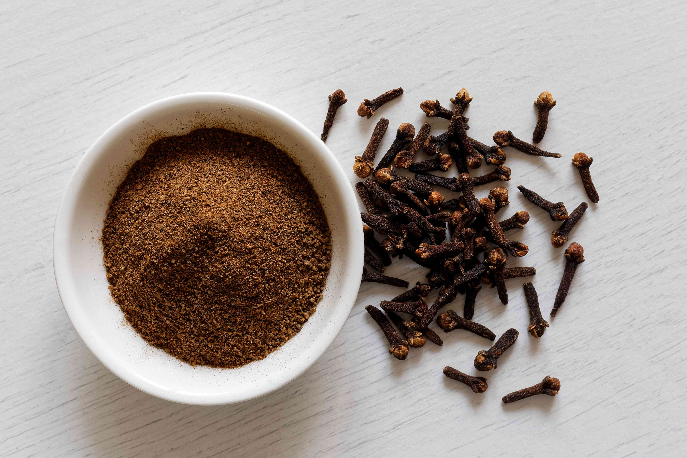
Origin: Indonesia, India
Uses: Cooking, oil, medicine
Benefits: Relieves toothache, antibacterial
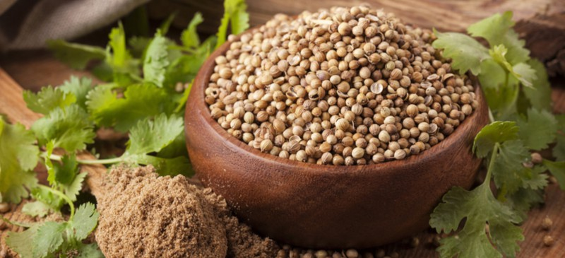
Origin: India
Uses: Cooking, garnishing
Benefits: Controls sugar, aids digestion
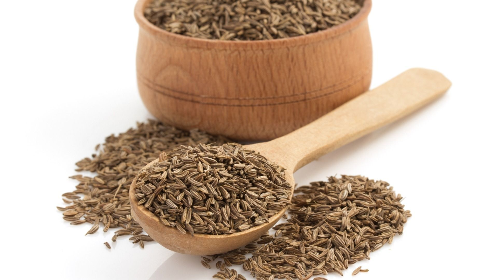
Origin: India, Middle East
Uses: Curries, spice mixes
Benefits: Aids digestion, boosts immunity
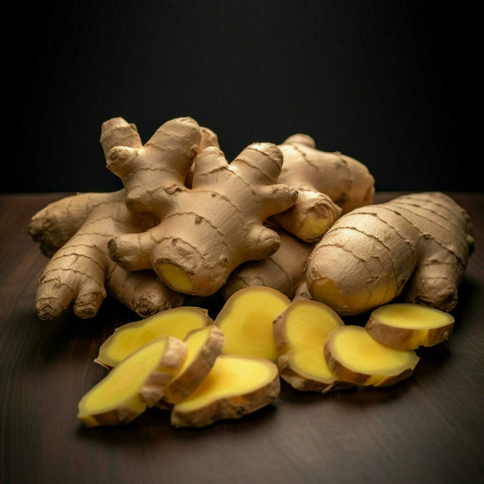
Origin: India, China
Uses: Tea, cooking, medicine
Benefits: Reduces nausea, improves digestion
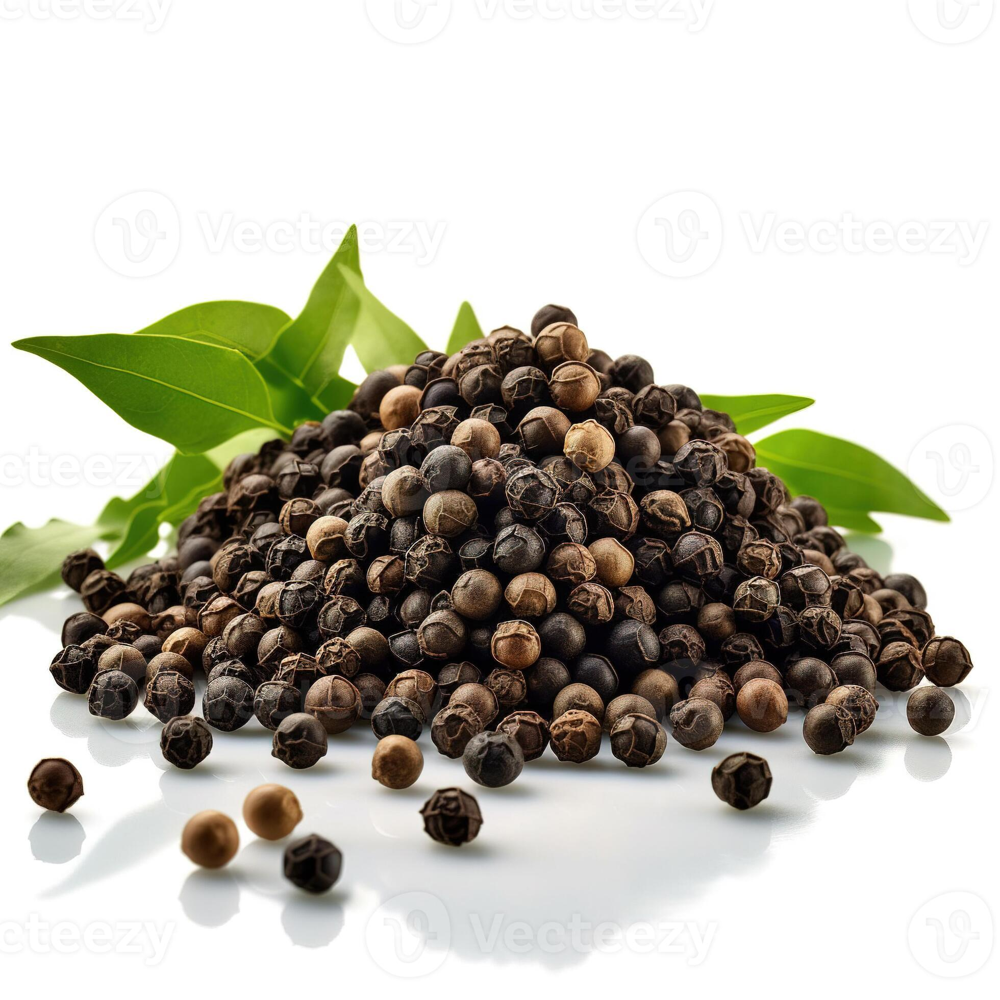
Origin: Kerala, India
Uses: Seasoning, spice blends
Benefits: Improves digestion, metabolism
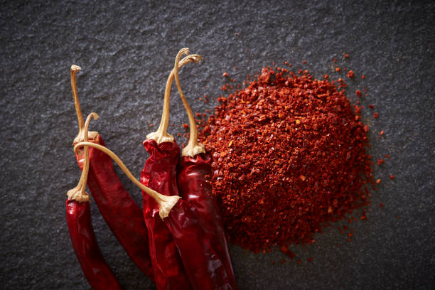
Origin: India, Mexico
Uses: Adds spice to dishes
Benefits: Boosts metabolism, rich in vitamin C
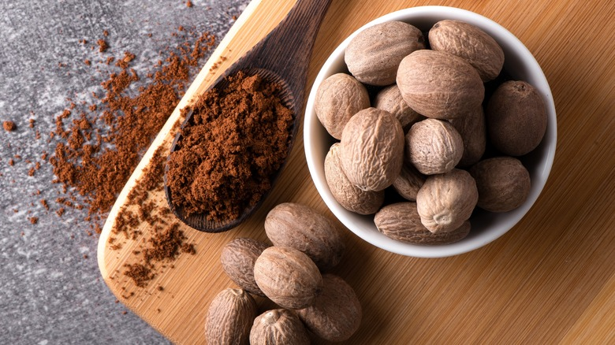
Origin: Indonesia
Uses: Desserts, sauces, beverages
Benefits: Improves sleep, aids digestion
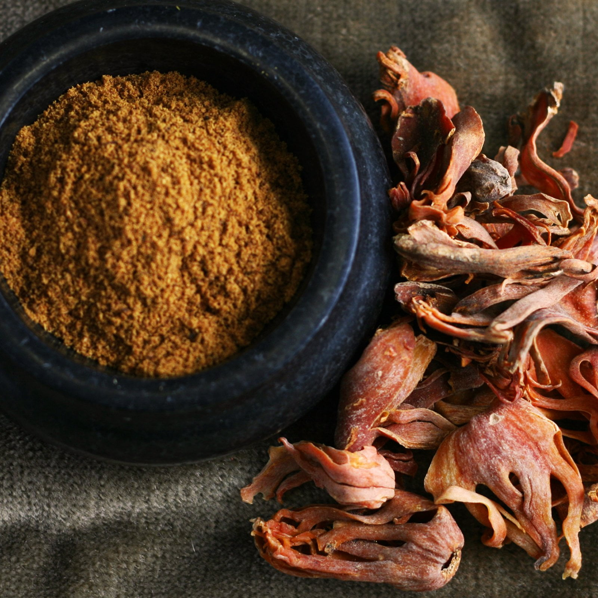
Origin: Indonesia
Uses: Baking, spice blends
Benefits: Anti-inflammatory, digestive aid
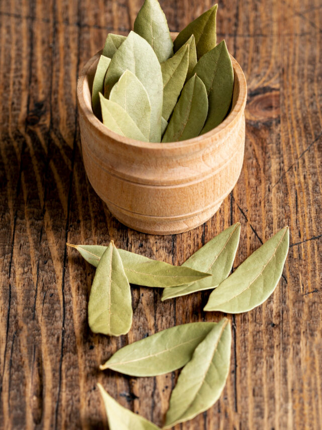
Origin: Mediterranean, India
Uses: Soups, curries, rice dishes
Benefits: Improves digestion, rich in antioxidants
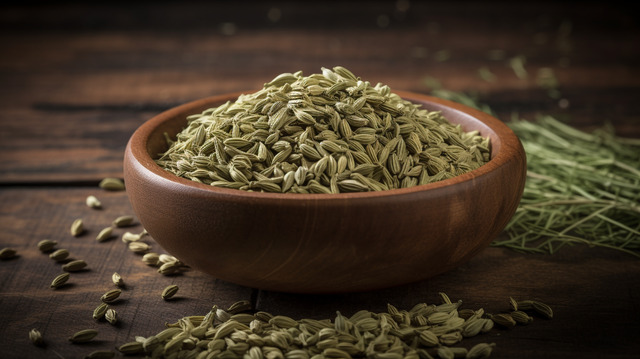
Origin: India, Mediterranean
Uses: Cooking, mouth freshener
Benefits: Aids digestion, reduces bloating
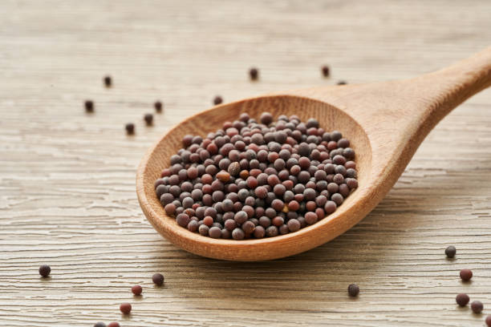
Origin: India
Uses: Tempering, sauces
Benefits: Boosts metabolism, rich in nutrients
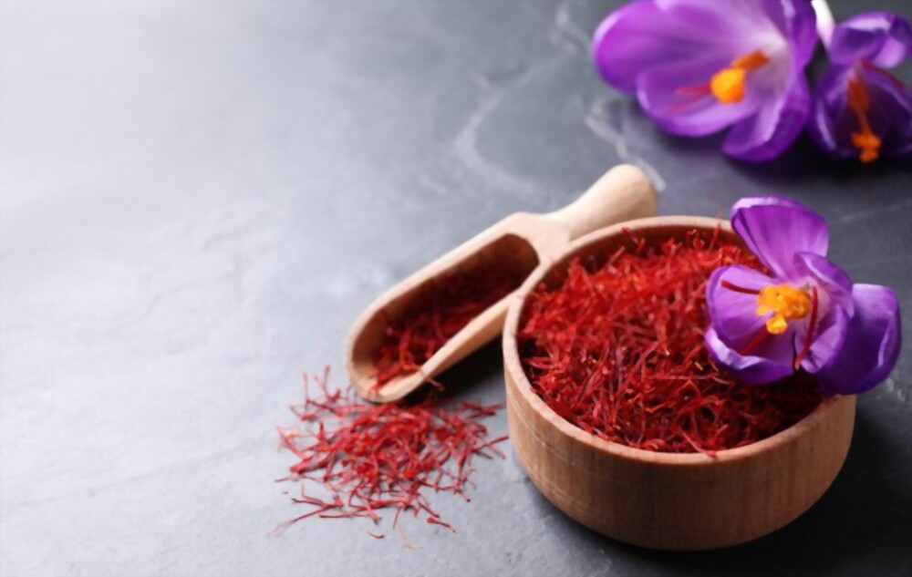
Origin: Iran, Kashmir
Uses: Desserts, luxury dishes
Benefits: Improves mood, antioxidant
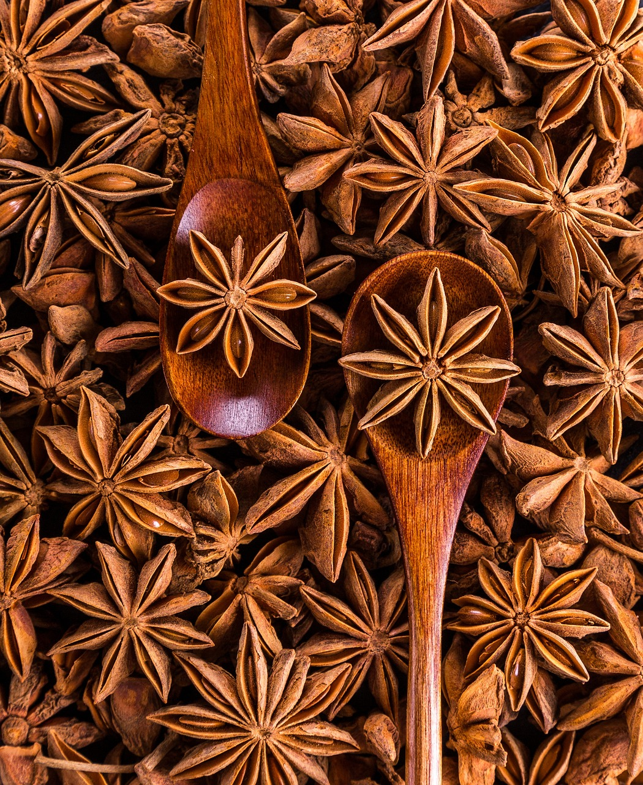
Origin: China, Vietnam
Uses: Asian cuisine, teas
Benefits: Rich in antioxidants, aids digestion
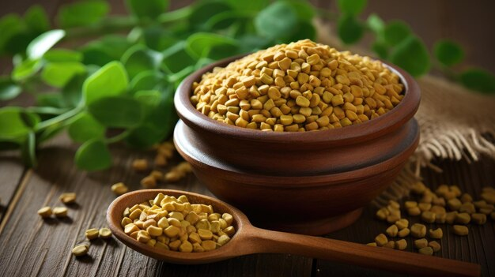
Origin: India
Uses: Curries, herbal medicine
Benefits: Controls sugar, improves digestion